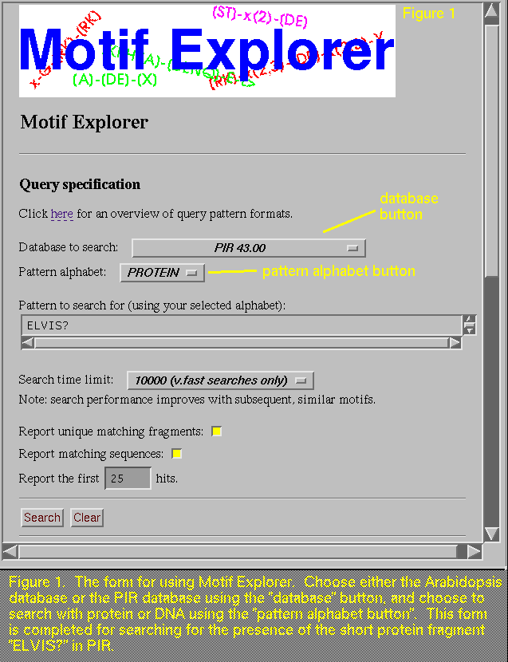
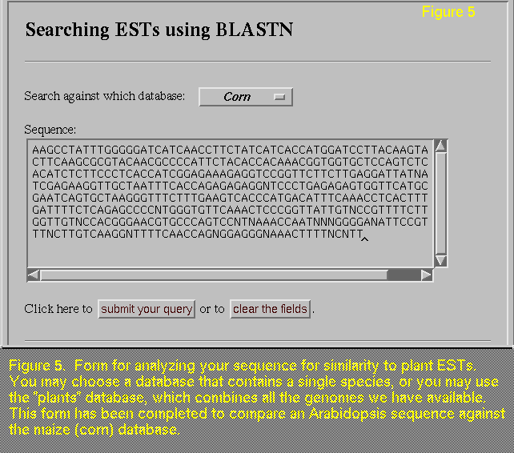
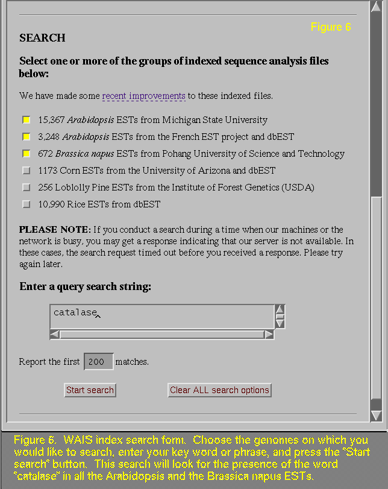

Kristi L. Swope(1,2), Paul Bieganski(2), Ed Chi(2), Elizabeth Shoop(2), Olaf Holt(2), John Carlis(2), John Riedl(2), Thomas Newman(3) and Ernest F. Retzel(1)
(1)Medical School and (2)Department of Computer Science, University of Minnesota, Minneapolis MN; (3)DOE Plant Research Laboratory, Michigan State University, East Lansing, MI
email: comments@lenti.med.umn.edu

If you want to find ELVIS in PIR (alas, we could not find him in
Arabidopsis), fill out the form as shown in (Figure 1)
and press the "search" button to receive a report similar to
the one shown in (Figure 2). At the top of this report, you
are reminded of the pattern, or motif, for which you searched. A total
of the matches found is the next item in the report, followed by the
unique matching fragment summary. Note that the search was actually
conducted on ELVIS? not ELVIS, and the question mark serves as a wild
card. That is, any amino acid (or base, for DNA searches) is
acceptable. Since there are 20 amino acids, there could be as many as
20 unique fragments that are found, and any of these could be repeated
any number of times. After this summary is a list of all the sequences
in which the query was found. The query motif is shown in pointy
brackets and a short piece of surrounding sequence is also displayed,
as it may provide additional insight for your search. A list of these
sequences, along with links to the PIR or Arabidopsis database,
is provided at the end of this report. By clicking on these links you
will find out detailed information about the sequences that contain
your search pattern. If you search using the PIR database, the
resulting links go directly to the Entrez document server, and if you
search using the Arabidopsis database, the links go to an html
document created at the University of Minnesota that contains detailed
information regarding the similarity of that sequence to sequences
from other public databases. These are the same reports that have been
WAIS indexed for key word searching and they are discussed below (Section 4.0).
2.2 More complex searches
The power and flexibility of Motif Explorer is endless! There are a
few basic conventions that you need to learn, and then simply let your
imagination soar. Some of the conventions are based on PROSITE
(Bairoch, 1995). First and foremost, the standard IUPAC one-letter
codes for amino acids and nucleotides are used to designate residues
and bases, respectively, with "x" standing for any amino
acid (or base). Different shaped brackets have different meaning. For
example, square brackets mean "accept any amino acid (or base)
listed", and curly brackets mean "accept any amino acid (or
base) except those listed". Also, parenthesis are used to
designate a numerical value or range. Therefore, a search on
CAT-[CG]-x-GTG-{CG}-x(2,6)-GTA
will find sequences that fit this pattern:
CAT-[either C or G]-any base-GTG-{any base except C or G}-(any two to
six bases)-GTA
The results from using this search on the
Arabidopsis database include six fragments of varying length.
The hyphens are not essential; they merely aid in
grouping.
PROSITE conventions also allow searching for patterns at the beginning
or end of a sequence using left or right pointy brackets
("<" or ">"), respectively. For example,
<A-x-[ST](2)-x(0,1)-V will list only matches to the N-terminal of
the sequence, and G[ACG]GATC> will list matches occurring at the 3'
end of the DNA sequence. Motif Explorer works using the strategy of
finding whether or not a motif is contained within a sequence before
it locates the position of the subsequence. (This strategy enables
increased speed in searching.) As a result, the "Unique matching
fragment summary" lists all unique motifs found anywhere in the
database sequences, while the "Matches" section only lists
those sequences that have hits to the appropriate sequence
location. For example, the query
G[ACG]GATC>
locates over 3,700 fragments matching the patterns GAGATC, GCGATC, and
GGGATC, but the report indicates that only three examples from the latter two patterns are found
at the 3' end of the sequence.
There is a slight oddity you may notice
when you run a search using the left pointy bracket,
"<". This symbol is used by Motif Explorer to designate
the beginning of a sequence, and it is also has meaning for HTML (the
language we use to make Motif Explorer available to you on the
server). Due to this double use of "<", the "Query
expression" line on the report will show up blank, but this is
not cause for concern, as the search and its results are not
affected.
Additional searching power is gained using regular expressions, a
pattern searching technique that is commonly used in computer
science. The ? (question mark) character, the | (vertical bar, or "pipe")
operator, and parenthesis are used along with the letters of the DNA
(or protein) alphabet to make these expressions. The ? (question mark)
character allows for any base (or amino acid) to be accepted, just as
with the "x" in PROSITE conventions, and the | (vertical
bar, or "pipe") operator acts as an "or statement". For example, if you
were looking for EcoRI or AlwnI restriction enzyme digestion sites,
you could enter the following search:
(GAATTC)|(CAG???CTG)
to find matches to GAATTC, or any string of bases that starts with
CAG, ends with CTG and has any 3 bases in between. Parenthesis can
also be used to nest the expressions. By searching on AC((AG)|(CC))T,
you will match sequences ACAGT and ACCCT.
The more complex queries may require that you change some of the other
parameters on the form. Many searches will get completed using the
default "very fast" search time. Sometimes your search will
take longer, and the 20 second time limit is appropriate. Chances are,
if you need to conduct a search that has no time limit, the results you
obtain are likely not to be useful to your work. If you
"uncheck", or turn off, the "Report unique matching
fragments" box, then the report will not show the "Unique
matching fragment summary" section, which is missing in Figure 3 (compare with Figure 2, which has this section). This section is most
useful when your search may find more than one distinct pattern.
By
"unchecking" the "Report matching sequences", you
will not get the list of matches (Figure 4; compare with Figure 2). While this step
drastically limits the amount of information you will receive in the
report, it does speed up the query time, and is useful when you are
testing out the prevalence of your search pattern.

The reports that you see when the search is completed are easy to
interpret. They start and end with a listing of the database you used
for your search and the sequence you analyzed. In between, are first a
list of the sequences producing high-scoring alignments, and second,
the actual alignments with score, p-value and % identity
information. Searches investigating the similarity of the
Arabidopsis EST 169H15T7 (a probable catalase, shown in Figure
5) to the maize (corn) (maize summary)
and the entire plant database (plant
summary) were conducted for your perusal. Note that this sequence
has a high similarity to one maize EST, which is more easily seen in
the corn-only database, and it also appears in the plants database,
along with many good matches to both Arabidopsis and rice
ESTs.
There are only a few points to remember when using this program. While
the minimum sequence length is 12 nucleotides, this program is
intended for use with sequences that are about 50 bases or
longer. Five bases are acceptable in your query sequence: G, A, T, C,
or N, if there is an ambiguity. Also, keep in mind that your blast
must be conducted on a "fixed" sequence. That is, if you
want to look at two sequences that are slightly different, you must
run two run the BLASTN program twice, using a different sequence each
time. If you are interested in learning more about the subject
sequence, or the sequence that your query sequence matched, you can
enter its clone id into the WAIS index search that we have established
(described below, Section
4.0).
2.3 Future additions
Currently, if you conduct a protein search on the MSU
Arabidopsis DNA database, the characters are interpreted as DNA
bases, not as amino acids. That is, when you input a peptide
sequence, it is back-translated, using full redundancy, to the appropriate nucleotide
sequence(s) before running the search. (Similarly, motifs for DNA
searches on the PIR database are translated to protein before the
search is conducted.) In the future, we plan to perform reading frame
prediction using GRAIL to reduce the likelihood of false-positive
hits. Arabidopsis sequences will then be translated into
probable reading frames and searched as polypeptides when you conduct
a search using a protein motif. Also, we will eventually be putting
all Arabidopsis sequences available at NCBI's dbEST in the
Motif Explorer Arabidopsis DNA database; presently, as mentioned above,
only those from the
MSU project are included.3.0 Searching with longer DNA Sequences
3.1 How to search
If you have sequenced a gene from Arabidopsis or another plant,
you will be interested in the plant EST databases that we have created
by compiling Arabidopsis, maize, rice, and loblolly pine
sequences. Using the form provided (a completed example is shown in
(Figure 5)), you may analyze your DNA sequence for similarity (using
the BLASTN algorithm; Altschul, et al., 1990) against a
single genome or all of the plant species we have available. The
advantage of this tool is that you can compare your plant sequence
against a large number of other plant cDNA without having to sift
through all the matches in other public databases, which are comprised
mainly of animal cell, bacterial, and other non-plant DNA. In
addition, the BLASTN analysis is performed essentially
instantaneously, without your needing to format a special
email. Simply choose your database from the list provided, enter the
sequence you are studying (if you already have your sequence in the
computer, be sure to copy and paste it in the form to avoid typing
errors!), and press the "submit your query" button. Your
sequence will then be blasted against all the cDNA we have available
in the database you chose. 3.2 Future additions
We have several plans for improving this tool. For example, if you
find an EST that aligns with your sequence, you cannot link directly
into our similarity analysis report for that EST. This feature will be
added shortly. Right now, however, you can get to this report
relatively quickly by copying the EST clone id and pasting it in the
WAIS index form (Section
4.0). In addition, we plan to provide similar databases for
protein sequences. These databases will be made using GRAIL so that
similarities to sequences in the incorrect reading frame will be
minimized. We will also be adding over 700 Brassica
napus cDNA sequences (Section 4.0) to the next version
of the plant EST databases. 4.0 Searching with Key Words
The last tool that we mention here is the WAIS index search (Figure 6
) that we have on our server, again, under the Arabidopsis
project. We have indexed
exhaustive reports, detailing the similarity of Arabidopsis
ESTs and other genome cDNA to sequences in GenBank, GenInfo and
PIR. These files are best searched using key words or phrases, similar
to a literature search, except instead of searching through many
journals for articles of interest, you are searching through quality
and blast reports for sequences of interest. WAIS index searching and
the interpretation of the results have been explained previously
(Shoop, et al., 1995; Swope et al., 1995). Our first tutorial,
which demonstrates how to access and
study the results, also explains how we prepare the raw sequence for
processing, as well as what analysis is conducted. Currently, we
index reports from over 18,500 Arabidopsis ESTs from both
Michigan State and France (with about 1,000 new sequences per month),
1,200 maize (corn) ESTs, 250 loblolly pine ESTs, 11,000 rice ESTs, and
and recently we have added a new genome, Brassica napus, with
700 ESTs. The indexes have been designed so that you may select
any combination of these species for a given search.

Regardless of your search preference, we wish you happy hunting! As
you peruse our server, please be sure to complete the registration
form, so you will be notified of changes, updates and new
additions. If you have any questions or comments about this tutorial
or any of the tools we have available on the web, please email us at
comments@lenti.med.umn.edu and one of us will get back to you.
We would also like to give our thanks to Mary Anderson of the
Nottingham Arabidopsis Stock Centre, and Carolyn Tolstoshev,
Mark Boguski and Jane Weisemann of NCBI's dbEST; their encouragement
and assistance in this work has been very important to us.
A. Bairoch. 1995. "PROSITE: A Dictionary of Protein
Sites and Patterns: User Manual", Release 13.0, available at
[
http://expasy.hcuge.ch/sprot/prosite.html].
P. Bieganski. 1995. "Genetic Sequence Data Retrieval and
Manipulation based on Generalized Suffix Trees", Ph.D. Thesis,
University of Minnesota, Minneapolis, MN.
P. Bieganski, J. Riedl, J.V. Carlis and
E.F. Retzel. 1996. "High-Performance Interactive Exploration of
Amino Acid Sequence Motifs", Pacific Symposium on Biocomputing,
Hawaii. Accepted.
P. Bieganski, J. Riedl, J.V. Carlis and
E.F. Retzel. 1994. "Generalized Suffix Trees for Biological
Sequence Data: Applications and Implementation" In: Proceedings
of the IEEE 27th Hawaii International Conference on System
Sciences. Oahu, Hawaii. L. Shriver and L. Hunter, (Eds.). IEEE
Computer Society Press. V:35-44.
M.S. Boguski, T.M.J. Lowe, and
C.M. Tolstoshev. 1993. "dbest - database for expressed sequence
tags." Nature Genetics, 4:332-333.
T. Newman, F. de Bruijn, P. Green, K. Keegstra,
H. Kende, L. McIntosh, J. Ohlrogge, N. Raikhel, S. Somerville, M.
Thomashow, E.F. Retzel and C. Somerville. 1994. "Genes Galore: A
Summary of Methods for Accessing Results from Large-Scale Partial
Sequencing of Anonymous Arabidopsis cDNA Clones." Plant
Physiology. 106:1241-1255.
E. Shoop, E. Chi, J.V. Carlis, P. Bieganski, J. Riedl,
N. Dalton, T. Newman and E.F. Retzel.1995. "Implementation and
Testing of an Automated EST Processing and Similarity Ana lysis
System." In: Proceedings of the IEEE 28th Annual International
Conference on System Sciences. Maui, Hawaii. L. Shriver and L. Hunter,
(Eds.). IEEE Computer Society Press. 5:52-61.
K.L. Swope, T.C. Newman, E. Shoop, P. Bieganski, E.
Chi, O. Holt, J. Carlis, J. Riedl and E.F. Retzel. 1995.
"Everything you wanted to know about the University of Minnesota's
analysis of Arabidopsis ESTs but were afraid to ask." Weeds
World: The International Electronic Arabidopsis Newsletter.
2(ii):21-26. Available at [http://nasc.life.nott.ac.
uk:8300/]5.0 Acknowledgments
The University of Minnesota
Plant Data Acquisition, Analysis and Distribution Project is funded
under NSF Grant BIR 940-2380, and the Michigan State University DOE
Plant Research Laboratory Arabidopsis cDNA Sequencing Project
is funded under NSF Grant BIR 931-3751. In addition, we are supported
by major resources from the following: The University of Minnesota
Medical School, with special thanks to Dean Frank Cerra; Computing and
Informations Services, with special thanks to Professor and Vice
President Don Riley; University Networking Services, with special
thanks to Director Larry Dunn; Sun Microsystems, with special thanks
to Sandra Swenson; IBM, with special thanks to Norm Troullie and Pat
Carey; and Cray Research, Inc., with special thanks to John Carpenter
and Bill King.6.0 References
S.F. Altschul, W. Gish, W. Miller, E.W. Myers, and
D. J. Lipman. 1990. "Basic Alignment Search Tool", Journal
of Molecular Biology, 215:403-410.
{kind=link}
{kind=link}
{kind=link}